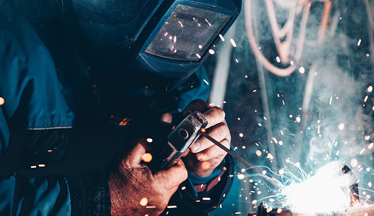
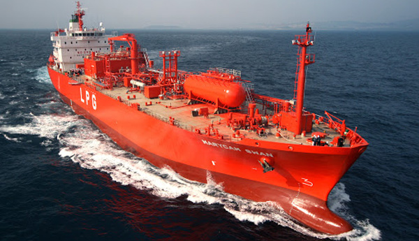
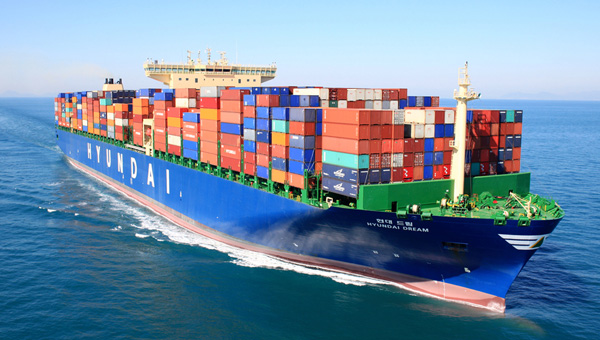
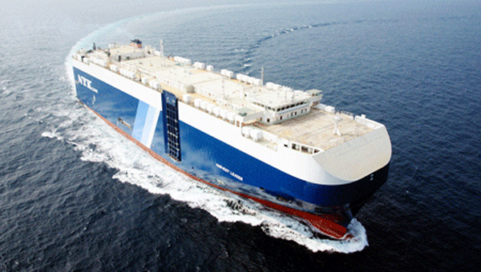
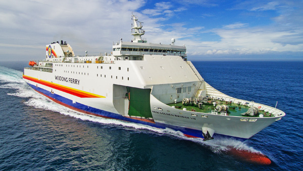

시장점유율 1위를 유지하게하는
독보적인 건조기술
-

가스선
독자적으로 개발한 LNG연료시스템 (FGSS)과 ‘천연가스 재액화 장치(PRS)’ 등 LNG관련 기술 우위를 바탕으로 세계 최고 경쟁력을 보유하고 있습니다.
-
유조선
원유운반선, 셔틀탱커, 정유운반선, 화학제품운반선 등 각종 유조선을 건조하였으며, 이를 통해 독보적인 유조선 건조기술을 보유하고 있습니다.
-

컨테이너선
당사는 20피트 컨테이너 23,000개를 11단까지 적재/운항이 가능한 초대형 컨테이너선 건조기술을 보유하고 있으며, 선박 대형화 등 시장 Trend를 선도하고 있습니다.
-

자동차운반선
변형을 최소화하는 얇은 철판 용접기법과 좁은 공간에 최대의 차량을 싣는 내부설계로 최대의 적재효율을 자랑합니다.
-

여객선
대우조선해양은 40노트급 초고속카페리, 472인승 트레저 아일랜드호, 1천5백명의 승객과 자동차 200대를 운송하는 그리스 블루스타 카페리, 이탈리아 모비라인사의 1,880인승 카페리를 차례로 건조, 선진 여객선 건조기술을 습득 했습니다.